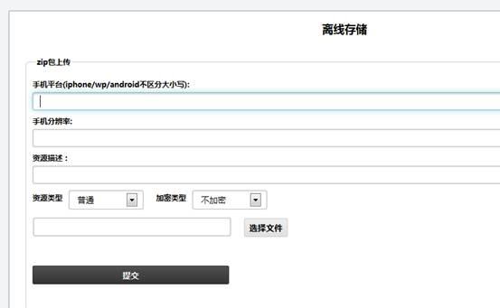
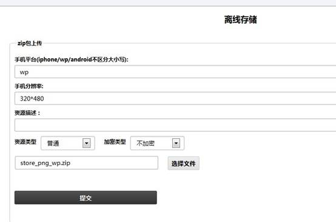
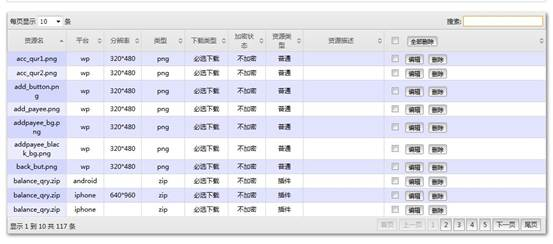
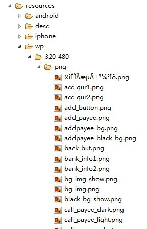
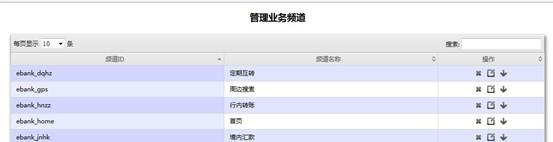
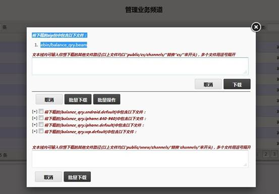
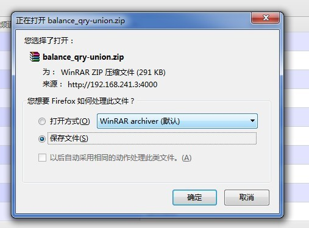

点击离线存储:

输入手机平台，手机分辨率，选择资源类型，上传资源文件：
手机平台目前支持iphone，android，winphone。
分辨率可按照不同的手机分辨率进行填写，格式举例: 320*480。
如果没有输入平台，则该资源作为通用资源，所有平台的客户端都可以使用。
离线资源分为普通资源和插件资源：
插件资源一般指一个完整的功能插件，通常为zip包，上传后系统不会对zip包进行解压，会在对应分辨率文件夹下生成ZIP文件夹，文件夹内存放上传的zip压缩包。如果非插件形式的资源文件，选择普通文件上传，如果是单个文件上传，会直接存放在对应的分辨率文件夹内，如果是压缩的zip包，系统会自动解压并将解压后的内容存放到分辨率文件夹下。
当手机客户端程序运行时，会从对应平台，分辨率下获取相应的资源文件。

点击【提交】按钮：

系统会根据资源的平台和分辨率将资源放在对应的目录下。一般为 ebank/public/www/resources/ ，该目录结构下会按照平台生成不同的文件夹，每个平台文件夹下会生成分辨率文件夹，对应文件夹下为上传的资源文件。

上传后为普通资源。
点击管理业务频道:

点击要上传频道的下载按钮:

全选，点击批量下载：

保存到本地，点击离线资源，上传刚才的压缩包：
此时选择资源类型为普通，点击上传即可。
上传后资源属于插件资源。
普通资源使用脚本打包。
需要进入到脚本文件夹下：
ewp为rpm包：
文件目录为：/usr/local/lib/ewp/bin
ewp为源码：
文件目录为：ewp/bin
在终端中进入到脚本目录地址，输入 ./channel_adapter
[root@tracvm bin]# ./channel_adapter
Please select the util, dafault is import:
1) import
2) package
接着输入2
You have selected function: package
----------------------------------------------------
Create channel common resource package: Start!
----------------------------------------------------
Please enter the the app dirs:
输入当前app的目录：
如果是服务器上应该 /var/www/apps/ebank
././bank_demo
Input app dir: ././bank_demo
----------------------------------------------------
Please enter the the dest dirs (default ./):
输入普通包需要的存放的地址，默认为当前目录。
Please enter the the dest dirs (default ./):
././bank_demo/public/test
Dest dir: ././bank_demo/public/test
----------------------------------------------------
args:--[{root,["/usr/lib64/erlang"]},
{progname,["erl"]},
{home,["/root"]},
{pa,["/mnt/hgfs/work/qt/ewp/ebin"]},
{sname,["common_package"]},
{app_dir,["././bank_demo"]},
{dest_dir,["././bank_demo/public/test"]},
{noshell,[]}]
=INFO REPORT==== 22-Jul-2013::10:38:42 ===
admin_package_resource:200 success to create common resource zip file."././bank_demo/public/test/android.default.zip"
=INFO REPORT==== 22-Jul-2013::10:38:42 ===
admin_package_resource:200 success to create common resource zip file."././bank_demo/public/test/iphone.640-960.zip"
=INFO REPORT==== 22-Jul-2013::10:38:42 ===
admin_package_resource:200 success to create common resource zip file."././bank_demo/public/test/iphone.default.zip"
=INFO REPORT==== 22-Jul-2013::10:38:43 ===
admin_package_resource:200 success to create common resource zip file."././bank_demo/public/test/wp.default.zip"
[root@tracvm bin]#
将生成的zip包从离线资源中选择普通资源上传。